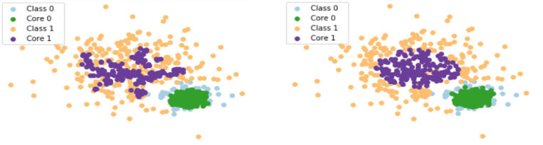

Machine learning solutions usually consider that the train and test data has the same probabilistic distribution, that is, the data is stationary.
However, in streaming scenarios, data distribution generally change through the time, that is, the data is non-stationary.
The main challenge in such dynamic environment is the model adaptation for the constant drifts in data distribution.
These drifts are known as
Concept-Drift.
Other important restriction may happen in online scenarios: the extreme latency to verify the labels. Thus, semi-supervised solutions needs to deal with lack of labels. These scenarios are very common in robotics due to the expensive costs to obtain the labels. This problem also happens with datastreams from sensors.
My research focus on batch scenarios or datastream (one instance at time) environments.
My master thesis contains more details about the first outcomes of this research and can be
accessed here.
Density-based approaches for selecting core samples
Selecting samples from core regions helps to keep the most important instances that represent the new distribution concepts is known as core support extraction (CSE).
We study about density-based algorithms applied in non-stationary environments against single semi-supervised approaches.
First results showed that a semi-supervised classifier is
improved up to 68% on a real dataset when it is applied along with a density-based CSE algorithm.
For example, KDE and GMM are good approaches as CSE methods.
Between density approaches, KDE seems to be better since it has less parameters.

Besides, KDE has another advantage over GMM: the better spreading inside a distribution.
The Figure shows that KDE (on the left) gives the highest weights in a larger region than GMM (on the right). The purple points represents the core instances, that is, the most important instances to be used as a training instances for the next subsequent batch in an online semi-supervised scenario.
In our paper "
Density-based Core Support Extraction for Non-stationary Environments with Extreme Verification Latency", we explain these approaches in seventeen synthetic datasets and a real one, showing the strengths and weaknesses of these CSE methods through many metrics.
AMANDA: A Density-based semi-supervised framework for non-stationary environments
The above study supported a bigger research about density-based algorithms for non-stationary environments.
Hence, we built a density-based adaptive framework for non-stationary data, denominated AMANDA, which uses a semi-supervised classifier along with a density-based CSE method.
AMANDA has two variations: AMANDA with a fixed cutting percentage (AMANDA-FCP); and AMANDA with a dynamic cutting percentage (AMANDA-DCP).
First results indicate that the two variations of AMANDA outperform the state-of-the-art methods for almost seventeen synthetic datasets and three real ones with an
improvement up to 28% regarding the average error.
We have found that the use of AMANDA-FCP improved the results for a gradual concept-drift even with a small size of initial labeled data.
Moreover, our results indicate that SSL classifiers are improved when they work along with our static or dynamic CSE methods.
Our paper explaining how our method improved SSL classifiers on concept-drift scenarios and several other details was published in the journal
Information Sciences and can be acessed here.
Below you find one of our study cases about AMANDA performance in a non-stationary environment where a minority class is surrounded by a majority class.
The first video is a conventional semi-supervised learning (SSL) classifier with a sliding window approach. The second video is the AMANDA-DCP approach using the same SSL classifier. The last video is the AMANDA-FCP approach with the SSL.